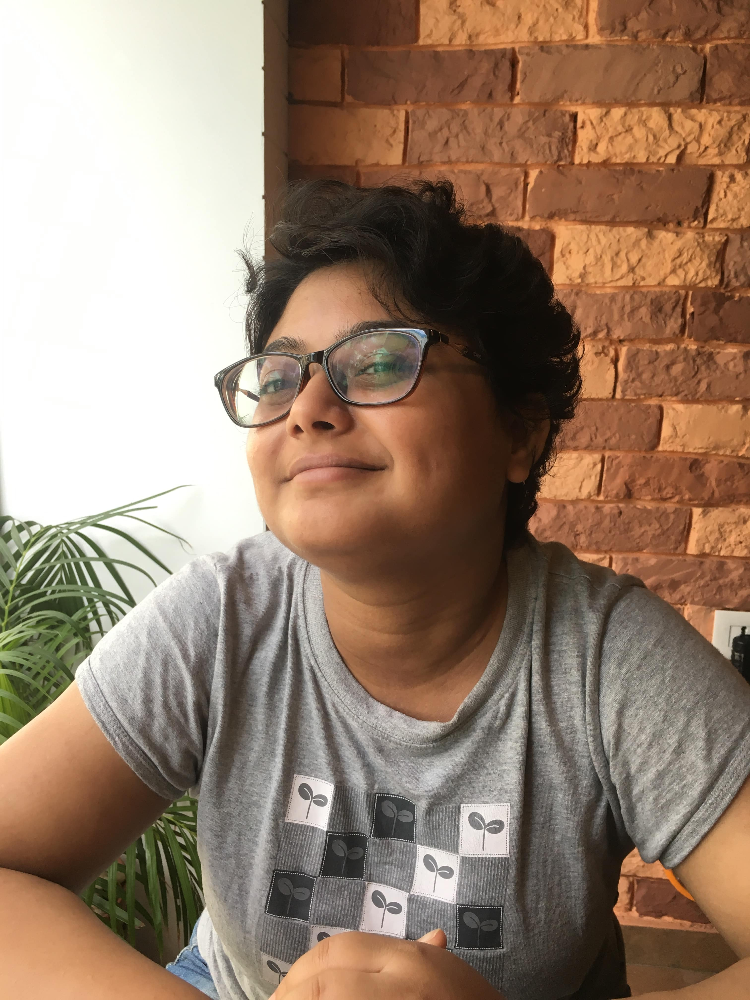

The information on this page was last updated on 11th August 2020.

Recent presentations
Publications
Grants
Work profile at SCTR, Jadavpur University
Membership of academic associations
Teaching experience
Academic qualifications
Short-term courses
Other academic experience
Recent presentations
- ‘What does “Digital” aspire to do to the “Humanities”?’ at international seminar on Digital Humanities and Literary Mapping: Pedagogy and Curricula organised by the Department
of Comparative Literature, Jadavpur University, January 7-9, 2020.
- ‘Managing and Execution: Perceiving the Workflow, Creating Metadata’ at British Library Endangered Archives Program (EAP) workshop on Building Digital Archives: Tools,
Techniques, Approaches organised by the School of Cultural Texts and Records, Jadavpur University, November 5-8, 2019.
- ‘The Titles, Epigraphs and Editorials of Early Bengali Newspapers and Magazines (1818-1867)’ at the Society for the History of Authorship, Reading and Publishing (SHARP) 26th
annual conference titled ‘From First to Last Texts, Creators, Readers, Agents,’ Western Sydney University, July 9-12, 2018
- ‘বাংলা সংবাদপত্র প্রকাশনার প্রথম পঞ্চাশ বছর ১৮১৮-১৮৬৭: কয়েকটি বিশেষ ঘটনা’ or ‘The first fifty years of Bengali periodicals 1818-1867: A few salient points’ at the one-day national
seminar on ‘ভারতীয় সংবাদ-পত্র: সেকাল ও একাল’ or ‘Indian newspapers: Then and Now’ organised by the Vidyasagar Centre of Indological Studies, Rabindra Bharati University, February 23,
2018
- ‘A project to look into the narrative of the publication of the first fifty years of Bengali periodicals, 1818-1867’ at the international conference titled ‘Turning the Page: New Directions in South Asian Book History’ organised by the
University of Chicago Center at New Delhi, March 9-10, 2017
- Co-conducted workshop titled ‘#SpottingData’, at the international Internet Researchers’ Conference organised at Jawaharlal Nehru University, New Delhi, by the Centre for Internet and Society, Bengaluru, February 26-28,
2016
- ‘Easy Access for Rare Books: A Proposition’ at ‘Re-booting Public Libraries for the 21st Century to Recreate the Future,’ national seminar organised by the Department of Library
and Information Science, University of Calcutta in collaboration with the University Grants Commission and Raja Rammohun Roy Library Foundation, March 3-4, 2016
Publications
- ‘Mining Verbal Data from Early Bengali Newspapers and Magazines,’ in Global Debates in the Digital Humanities, eds. Domenico Fiormonte and Paola Ricaurte (Minneapolis: University of
Minnesota Press, forthcoming in 2021)
- ‘The Journey of Questions of Women in Early Bengali Periodicals (1818-1867): An Overview’ in Aparna Bandyopadhyay, ed. Interrogating Cultures of Complicity and Resistance: A
Women’s Studies Compendium (Kolkata: Paiolck, 2019), pp. 148-157. ISBN: 9789388207720 (paperback), 9789388207737 (e-book)
- ‘বাংলা সাময়িকপত্রের ব্যবসায়িক জীবন’ or ‘Commercial lives of early Bengali periodicals,’ proceedings of the researchers’ conference organised by the Department of Bengali, Jadavpur
University, November 29-30, 2018. Volume edited by Barendu Mandal (Kolkata: Jadavpur University, 2018) (ISBN: 9789383660483)
- ‘প্রাচীন বাংলা পত্রিকার ইতিহাসের সন্ধানে’ or ‘In search of old Bengali periodicals,’ proceedings of the researchers’ conference organised by the Department of Bengali, Jadavpur University,
March 28-29, 2017. Volume edited by Sekhar Samaddar (Kolkata: Jadavpur University, 2017) (ISBN: 9789383660414)
- Editor and contributor to the 10th, 11th and 12th issue of Fellows, newsletter of the Jadavpur University SYLFF Association (2016-2019). Articles titled ‘Finding new methodology for
overcoming challenges’, ‘Not Only for Keeps: But Also for Documentation and Access’ and ‘I try to keep senses open’.
- Co-wrote three chapters (‘Images and Scanning’, ‘Data Management and Hyperbibliography’ and ‘Planning the Website’) in Bichitra: The Making of a Tagore Website (New York: Springer, 2015) (ISBN: Hardcover: 9783319236773; Ebook: 9783319236780)
- ‘Digitising and Documenting
Endangered Material: A Tale of Three Projects,’ proceedings of ‘Documenting Diversity—Collections, Catalogues &
Context,’ annual conference of ‘Comité International pour la Documentation/ International Committee for Documentation (CIDOC),’ New Delhi, September 5 -9, 2015.
- ‘Users and the Internet’ (2015), ‘Studying Internet in India’ essay series, ‘Researchers at Work’ blog, The Centre for
Internet and Society, Bengaluru.